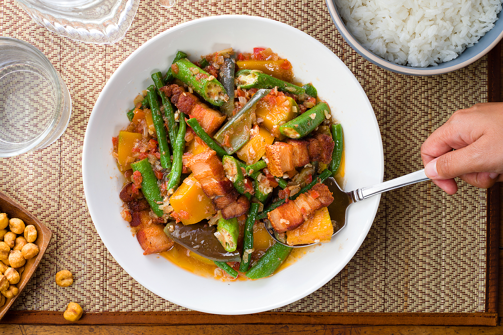
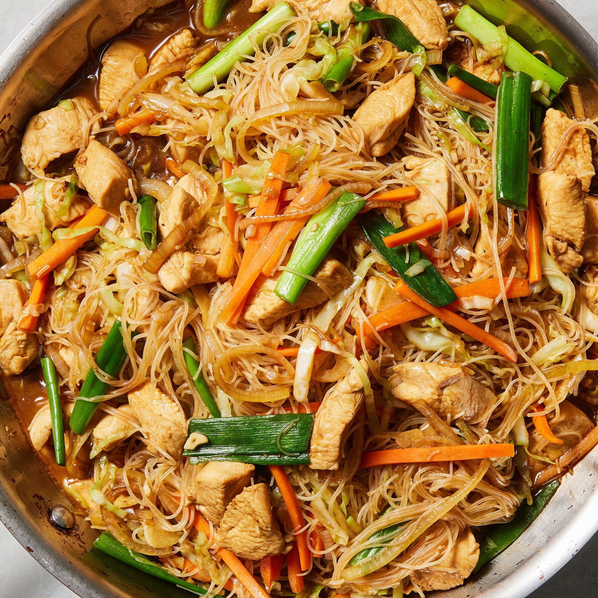

Our Special Dishes

Adobo
$200

Sisig
$250

Sinigang
$100

Pinakbet
$175

Pancit Bihon
$85
$200
$250
$100
$175
$85

$65
Crispy Filipino spring rolls filled with a savory mix of vegetables and meat.

$45
Sweet banana spring rolls coated in caramelized sugar for a delightful crunch.

$35
Refreshing green mango salad with bagoong (fermented shrimp paste) and tomatoes.
Adobo, a popular Filipino dish, is a slow-cooked meat (like chicken or pork), seafood, or vegetable dish, typically marinated and simmered in a flavorful sauce of vinegar, soy sauce, garlic, and other spices, often considered the unofficial national dish.
Sisig is a popular Filipino dish, traditionally made from chopped pork (often including the head, ears, and cheeks), seasoned with calamansi, onions, and chili peppers, and served sizzling hot on a plate.
Sinigang is a popular Filipino soup or stew known for its sour and savory taste, often made with tamarind (sampalok) as the primary souring agent, and featuring various meats and vegetables.

$82
Creamy caramel custard, a classic Filipino dessert.
Add to Order:max_bytes(150000):strip_icc()/halo-halo-5409582-step-08-18bca395e05542539cf4eb2e87fd6882.jpg)
$64
A refreshing mix of shaved ice, milk, fruits, and sweet toppings.
Add to Order
$112
Soft rice cake with coconut and salted egg, perfect for the holidays.
Add to OrderAt Renzarap, we bring the heart and soul of Filipino cuisine to your plate. Our restaurant is built on a passion for authentic flavors, traditional recipes, and a love for good food. Every dish we serve is crafted with fresh, high-quality ingredients, ensuring an unforgettable dining experience.
From our signature Adobo to the sizzling Sisig, each meal tells a story of Filipino heritage. Whether you're craving a comforting bowl of Sinigang or the vibrant flavors of Pinakbet, our menu is designed to satisfy every craving.
Our goal is to create a warm and welcoming atmosphere where families and friends can gather, share stories, and enjoy delicious food together. With a commitment to excellent service and authentic taste, Renzarap is more than just a restaurant—it's a celebration of Filipino culture.
Come visit us and discover why every bite at Renzarap is truly "Sarap!"
Email: contact@renzarap.com
Phone: +123 123 2344
Address: 123 Food Street, Masarap Town